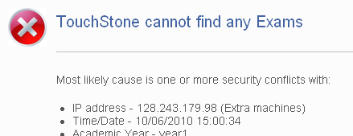
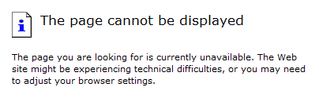
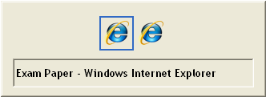
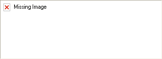
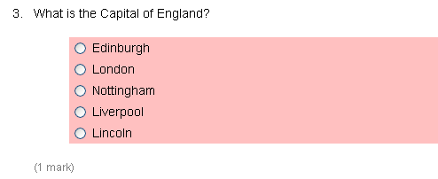

At the authentication dialog box click the 'Cancel' button. On the next screen it will say 'Access Denied'. At the bottom their should be a link that says 'Temporary Account', click this. Next get the student to complete their details in the online form and the computer system will allocate a temporary guest account and password. Log in and sit the exam with this guest account.
If one or two students cannot see the paper get them to re-log into the exam desktop and follow the instructions above to get a guest account. If the whole room cannot get to the exam paper then ring one of the emergency numbers for advice.

Restart computer, log back into above URL and then click on 'Restart>>' link next to the time/date of previous attempts listed. Reassure candidate that they can have extra time at the end if required. Also, ask candidate to quickly check that their answers to previous screens are properly recorded when back in the paper.
Alt+F4 to close exam paper; then 'Re-start' on blue screen; then get candidate to recheck all answers on the screen that crashed.

Use <ALT> and <TAB> to cycle around windows until paper reappears. If the paper does not reappear then select 'Re-start' on the blue screen.

Navigate to a different screen and then back again to refresh the images. If all students have the same problem, take a note a report back to the Course Office.

Visual warning indicating that the question has not been answered (i.e. this is a design feature and not a problem).

Tell candidates to click on the fire exit icon (there is one in each corner of the screen), note the time, and inform candidates that the exam duration will be extended to make good lost time. If the room must be evacuated tell candidates to remember which computer they were sitting at, in case you are able to return and restart.
Scroll down to bottom of screen and click the 'Continue' button.